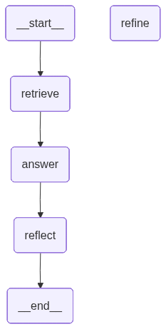

🔁 What is Iterative Retrieval in Agentic RAG?#
Combined both Iterative And Self reflection
✅ Definition: Iterative Retrieval is a dynamic strategy where an AI agent doesn’t settle for the first batch of retrieved documents. Instead, it evaluates the adequacy of the initial context, and if necessary, it:
Refines the query,
Retrieves again,
Repeats the process until it’s confident enough to answer the original question.
🧠 Why Use It? In standard RAG:
A single retrieval step is done, and the LLM uses it to answer.
If the documents were incomplete or irrelevant, the answer may fail.
In Iterative RAG:
The agent reflects on the retrieved content and the answer it produced.
If it’s unsure, it can refine its search (like a human researcher would).
import os
from typing import List
from pydantic import BaseModel
from langchain.chat_models import init_chat_model
from langchain_openai import OpenAIEmbeddings
from langchain_core.documents import Document
from langchain_community.vectorstores import FAISS
from langchain_community.document_loaders import TextLoader
from langchain_text_splitters import RecursiveCharacterTextSplitter
from langgraph.graph import StateGraph, END
import os
from langchain.chat_models import init_chat_model
from dotenv import load_dotenv
os.environ["OPENAI_API_KEY"]=os.getenv("OPENAI_API_KEY")
llm=init_chat_model("openai:gpt-4o")
### Load And Embed Documents
docs = TextLoader("sample_docs.txt", encoding="utf-8").load()
chunks = RecursiveCharacterTextSplitter(chunk_size=500, chunk_overlap=50).split_documents(docs)
vectorstore = FAISS.from_documents(chunks, OpenAIEmbeddings())
retriever = vectorstore.as_retriever()
### Define Agent State
class IterativeRAGState(BaseModel):
question: str
refined_question: str = ""
retrieved_docs: List[Document] = []
answer: str = ""
verified: bool = False
attempts: int = 0
### Retrieve Node
def retrieve_docs(state: IterativeRAGState) -> IterativeRAGState:
query = state.refined_question or state.question
docs = retriever.invoke(query)
return state.model_copy(update={"retrieved_docs": docs})
### Reflect And Verify
def generate_answer(state: IterativeRAGState) -> IterativeRAGState:
context = "\n\n".join(doc.page_content for doc in state.retrieved_docs)
prompt = f"""Use the following context to answer the question:
Context:
{context}
Question:
{state.question}
"""
response = llm.invoke(prompt.strip()).content.strip()
return state.model_copy(update={"answer": response, "attempts": state.attempts + 1})
## Reflect on answer
def reflect_on_answer(state: IterativeRAGState) -> IterativeRAGState:
prompt = f"""
Evaluate whether the answer below is factually sufficient and complete.
Question: {state.question}
Answer: {state.answer}
Respond 'YES' if it's complete, otherwise 'NO' with feedback.
"""
feedback = llm.invoke(prompt).content.lower()
verified = "yes" in feedback
return state.model_copy(update={"verified": verified})
## Refine query
def refine_query(state: IterativeRAGState) -> IterativeRAGState:
prompt = f"""
The answer appears incomplete. Suggest a better version of the query that would help retrieve more relevant context.
Original Question: {state.question}
Current Answer: {state.answer}
"""
new_query = llm.invoke(prompt).content.strip()
return state.model_copy(update={"refined_question": new_query})
builder = StateGraph(IterativeRAGState)
builder.add_node("retrieve", retrieve_docs)
builder.add_node("answer", generate_answer)
builder.add_node("reflect", reflect_on_answer)
builder.add_node("refine", refine_query)
builder.set_entry_point("retrieve")
builder.add_edge("retrieve", "answer")
builder.add_edge("answer", "reflect")
builder.add_conditional_edges(
"reflect",
lambda s: END if s.verified or s.attempts >= 2 else "refine"
)
builder.add_edge("refine", "retrieve")
builder.add_edge("answer", END)
graph = builder.compile()
graph

query = "agent loops and transformer-based systems?"
initial_state = IterativeRAGState(question=query)
final = graph.invoke(initial_state)
print("✅ Final Answer:\n", final["answer"])
print("\n🧠 Verified:", final["verified"])
print("🔁 Attempts:", final["attempts"])
✅ Final Answer:
Agent loops and transformer-based systems can be seen as complementary components in building sophisticated AI models, each contributing unique capabilities to the overall system. Here's how they relate:
1. **Agent Loops:**
- Focus on the cycle of thinking, acting, and observing, allowing for real-time adaptation and refinement of actions based on the outcomes.
- Useful in environments where continuous feedback is essential, enabling the agent to learn from its actions and improve over time.
- Involves memory, planning, and tool interactions, allowing the agent to build on past experiences and predict future actions effectively.
2. **Transformer-Based Systems:**
- Primarily focused on processing and generating language (or other sequential data types) using attention mechanisms.
- Excellent at handling complex sequences and learning contextual relationships through training on large datasets.
- Provide a foundation for understanding and generating human-like text, which can be a powerful tool when integrated into AI agents.
Combining these two concepts, an AI system can benefit from the strengths of both. For instance:
- **Integration:** Transformers can be used within agent loops to process and understand language, providing the agent with more sophisticated reasoning and communication abilities.
- **Enhancement:** The memory capabilities inherent in agent architectures allow transformers to maintain context over longer interactions, improving decision-making and adaptability.
- **Versatility:** By leveraging transformer models for tasks such as natural language processing within the agent loop, systems can interact more naturally with users and adapt to new information and tasks dynamically.
Overall, while agent loops offer a framework for real-time adaptation and learning from interactions, transformer-based systems provide the computational power and capability to understand and generate complex language patterns, making them a potent combination for developing advanced AI applications.
🧠 Verified: True
🔁 Attempts: 1
final
{'question': 'agent loops and transformer-based systems?',
'refined_question': '',
'retrieved_docs': [Document(id='3f9513b0-f37f-4fcf-a84d-df2239c60ab3', metadata={'source': 'sample_docs.txt'}, page_content='An agent loop is the cycle of thinking, acting, and observing. It allows an AI agent to continuously refine its actions based on results.\nThis feedback loop is crucial in autonomous systems to adapt in real-time.\nAgent-based architectures benefit from memory, planning, and interaction with tools.')],
'answer': "Agent loops and transformer-based systems can be seen as complementary components in building sophisticated AI models, each contributing unique capabilities to the overall system. Here's how they relate:\n\n1. **Agent Loops:**\n - Focus on the cycle of thinking, acting, and observing, allowing for real-time adaptation and refinement of actions based on the outcomes.\n - Useful in environments where continuous feedback is essential, enabling the agent to learn from its actions and improve over time.\n - Involves memory, planning, and tool interactions, allowing the agent to build on past experiences and predict future actions effectively.\n\n2. **Transformer-Based Systems:**\n - Primarily focused on processing and generating language (or other sequential data types) using attention mechanisms.\n - Excellent at handling complex sequences and learning contextual relationships through training on large datasets.\n - Provide a foundation for understanding and generating human-like text, which can be a powerful tool when integrated into AI agents.\n\nCombining these two concepts, an AI system can benefit from the strengths of both. For instance:\n- **Integration:** Transformers can be used within agent loops to process and understand language, providing the agent with more sophisticated reasoning and communication abilities.\n- **Enhancement:** The memory capabilities inherent in agent architectures allow transformers to maintain context over longer interactions, improving decision-making and adaptability.\n- **Versatility:** By leveraging transformer models for tasks such as natural language processing within the agent loop, systems can interact more naturally with users and adapt to new information and tasks dynamically.\n\nOverall, while agent loops offer a framework for real-time adaptation and learning from interactions, transformer-based systems provide the computational power and capability to understand and generate complex language patterns, making them a potent combination for developing advanced AI applications.",
'verified': True,
'attempts': 1}